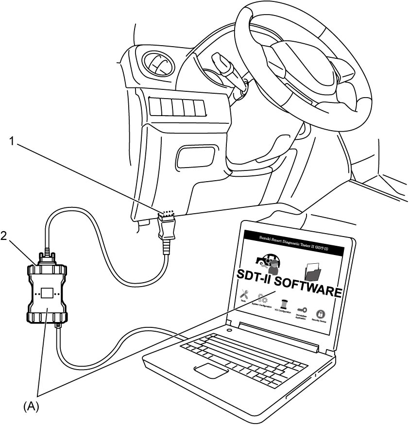

3B
| DTC Check |
1)Set ignition “OFF”.
2)Connect SUZUKI scan tool to DLC (1).
3)Set ignition “ON”.
4)Read DTC according to instructions displayed on SUZUKI scan tool and print it or write it down. Refer to Operator's Manual of SUZUKI scan tool for further details.

NOTE:
If communication between SUZUKI scan tool and 4WD control module is not possible, perform the following checks:
•Check communication condition between PC and VCI (2) using SUZUKI scan tool function.
•Check DLC power circuit and ground circuit.
•Check DLC cable. If necessary, check DLC cable by substituting a known-good DLC cable.
•Check CAN communication system. (“Control Module Communication Bus Off” is detected in any control module.)

•Check DLC power circuit and ground circuit.
•Check DLC cable. If necessary, check DLC cable by substituting a known-good DLC cable.
•Check CAN communication system. (“Control Module Communication Bus Off” is detected in any control module.)
—M16A model:
—K14C model:
—D16AA model:
•Check 4WD control module power circuit and ground circuit. —K14C model:
—D16AA model:

 "Expand image")
5)After completing the check, set ignition “OFF” and disconnect SUZUKI scan tool from DLC.